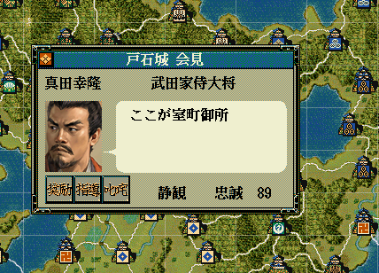

フェイドインやフェイドアウト、画面カメラの移動など、
画面演出系のAPI提供用オブジェクトとなります。
独自イベント演出前後のフェイドアウトやフェイドイン、や、
「画面中央に映す城」を変更する際に利用します。

フェイドイン()やフェイドアウト()を挟まずとも、カメラは移動可能ですが、移動があまりにも一瞬で終了してしまうため、
通常は何らかの表示を挟むことが多いかと思います。
名指しによる移動だけではなく、様々な応用が考えられます。
void カスタム::On_軍団ターン変更《メイン画面》(int 軍団番号) {
int iGundanID = 軍団番号 - 1;
if (0 <= iGundanID && iGundanID < 最大数::軍団情報::配列数) {
int iCastleID = p軍団情報[iGundanID].所属居城【城番号】 - 1;
if (0 < iCastleID && iCastleID < 最大数::城情報::配列数) {
カメラ移動(iCastleID);
}
int iBushouID = p軍団情報[iGundanID].軍団長【武将番号】 - 1;
if (0 < iBushouID && iBushouID < 最大数::武将情報::配列数) {
情報フレームダイアログ表示(Get_名字(iBushouID) + Get_名前(iBushouID) + "のターン");
}
}
}
フェイドアウト・フェイドインと同じ機能ですが、暗転しません。
void カスタム::On_プレイヤ担当ターン《メイン画面》() {
int iBushouID = Get_武将番号【配列用】(顔番号::織田信長);
if (0 <= iBushouID && iBushouID < 最大数::武将情報::配列数) {
int iDaimyoID = p武将情報[iBushouID].所属大名【大名番号】 - 1;
if (0 <= iDaimyoID && iDaimyoID < 最大数::大名情報::配列数) {
p大名情報[iDaimyoID].家紋 = 151;
}
}
画面更新();
}
天翔記の「ゲーム描画領域の解像度」を取得します。天翔記起動後に、ウィンドウが大きくなりますがそのタイミングの後に使用可能となります。
通常はこの関数を利用することはないかと思いますが、ゲーム画面の中央の(X, Y)座標などを取得する必要性が出た場合などに利用してくてください。
void カスタム::On_トップメニュー表示時() {
解像度型 解像度 = Get_天翔記解像度();
デバッグ出力 << 解像度.Ｘ << "," << 解像度.Ｙ << endl;
}
画面演出に関する主な所は以上となります。 詳しくは「画面演出情報型.h」や「城情報列挙.h」などを参照してください。